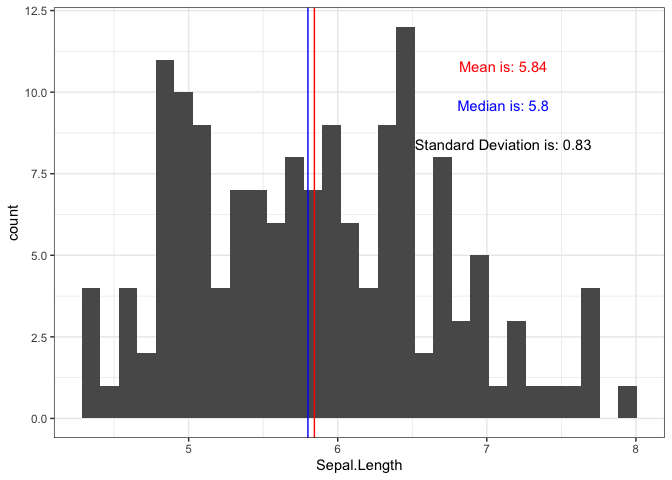
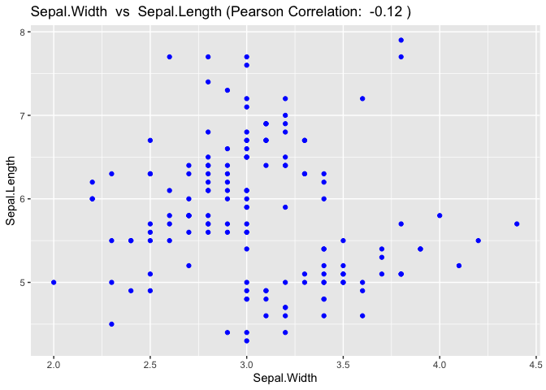
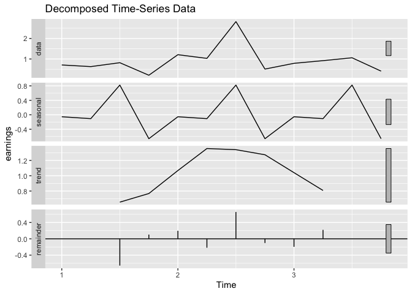

This package allows users to quickly create plots to facilitate exploratory data analysis along with providing additional summary statistics about the data such as mean, median, and correlation.
Installation
Install the development version from GitHub with:
# install.packages("devtools")
devtools::install_github("UBC-MDS/ggexpress")Package Vignette
Go here to see step by step walk through of package functions.
Package Summary
- This package simplifies the process of conducting Exploratory Data Analysis (EDA) on new datasets. It is designed to allow the user to explore the data graphically as well as obtain some basic summary statistics, all by writing only one line of code. Plots are produced using ggplot2 package under the hood. As Jenny Bryan once said: “Someone has to write for-loops, but it doesn’t have to be you!”. This sentiment has been implemented here for EDA analysis. The user is able to spend more time on analyzing the dataset and less time on configuring complex plot settings.
Features
Fast Fourier transforms: This function is missing from many summary functions and can be really useful for some cases. The user will be able to input time series data and the function will automatically implement frequency analysis and provide a frequency vs amplitude plot.
Scatter plot: Here you will take your own spin on 2-d scatter plots. It is often the case that we don’t know the distribution of the given points. This is why this function will group the points by each of the x and y axes and provide two histograms alongside the scatter plot. This way, you will have greater intuition on the properties of the data.
Histogram: This function takes in a dataframe and column name and creates a histogram. In addition, summary statistics of the input variable are overlayed onto the plot (e.g. mean and median vertical lines) and the sample standard deviation.
Time series analysis: This is a function that takes in a dataframe to the time series data, decomposes the timeseries and finally visualizes the raw data along with decomposition components. Except annual time series, the function will return a graph with 4 subplots, which includes the raw data, estimated trend, seasonal/cyclic and noise components.
Dependencies
ggplot2 (v3.2.1 or higher)
stats (v3.6.1 or higher)
tidyr (v1.0.0)
Hmise (v4.3 or higher)
forecast (v8.11)
rlang (v0.4.5)
magrittr (v1.5)
tibble (v2.1.3)
vdiffr (v0.3.1)
testthat (v2.3.3)
readr (v1.3.1)
gapminder (v0.3.0)
How this package fits into the R ecosytem
- Though the package is not ‘new’ from a technical perspective, it does provide convenience to the user when needing to perform exploratory data analysis. There are many more universal summary packages out there, such as pandas.DataFrame.describe() for python and summary for R).
ggexpresscombines both analysis and visual representation of the data for complex graphics like Fourier transform and general plotting tasks (i.e. histogram).
Code Examples
This is a basic example of how to make an exploratory histogram that displays summary statistics about the variable.
library(ggexpress)
## basic example code
# Produces a ggplot histogram with mean, median and standard deviation indicated on the plot.
gghist(data = iris, variable = Sepal.Length)
#> `stat_bin()` using `bins = 30`. Pick better value with `binwidth`.
#> `stat_bin()` using `bins = 30`. Pick better value with `binwidth`.
Creates a scatterplot and calculates correlation values for two numeric variables
library(ggexpress)
scatter_express(df = iris, xval = Sepal.Width, yval = Sepal.Length)
Plots a time series and its decomposed components
library(ggexpress)
time <- c("1950 Q1", "1950 Q2", "1950 Q3", "1950 Q4",
"1951 Q1", "1951 Q2", "1951 Q3", "1951 Q4",
"1952 Q1", "1952 Q2", "1952 Q3", "1952 Q4")
earnings <- c(0.71, 0.63, 0.82, 0.21,
1.21, 1.03, 2.82, 0.51,
0.79, 0.92, 1.06, 0.41)
ts_data <- tibble::tibble(time, earnings)
ts_plot(data = ts_data, col = "earnings", frequency = 4)
#> Registered S3 method overwritten by 'quantmod':
#> method from
#> as.zoo.data.frame zoo
This example displays a fourier transform given some simple input data.
library(ggexpress)
my_data = tibble::tibble(time_series = c(0, 1, 2, 3), signal = c(2, 3, 4, 6))
fourier_transform(data = my_data,
time_col = "time_series",
data_col = "signal")